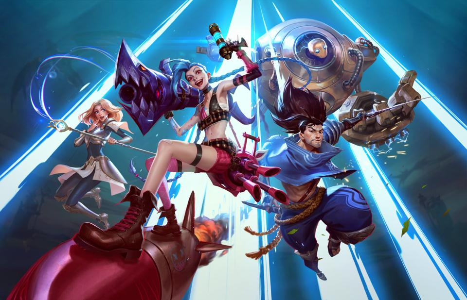

The Game News
Seu portal de notícias do mundo gamer
Home
Sobre
Contato
Os 25 Jogos mais jogados do mundo (2021)
Uma lista completa e atualizada

PlayStation 4: Jogos mais vendidos de setembro na Amazon
Cyberpunk 2077 e God Of War são destaques